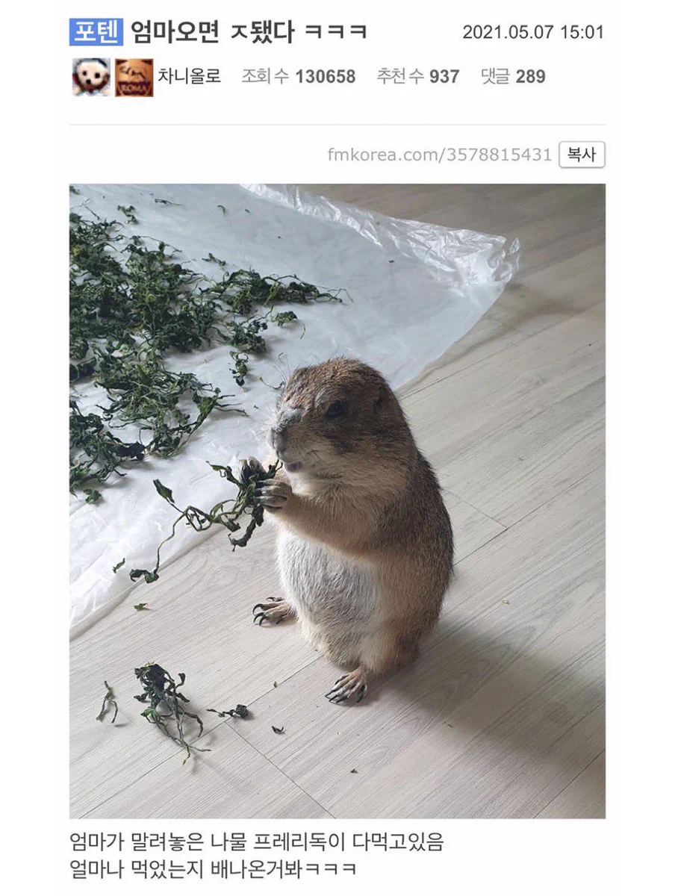
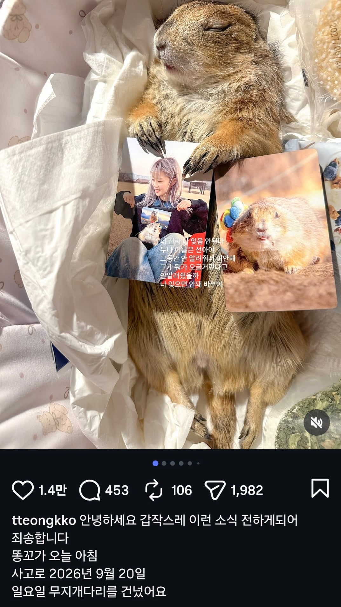

안타깝게 무지개별로 떠남
주인장 인스타를 보았을 땐
아마 전원이 연결된 전선을 먹은 것으로 추정


안타깝게 무지개별로 떠남
주인장 인스타를 보았을 땐
아마 전원이 연결된 전선을 먹은 것으로 추정
아니 마지막이 왜 ...
명복을 빈다 ㅠㅠ
잘 가라...
안타깝네
난또 나물먹은거때문에 간줄알았네
아니 자연사가 아니야? ㅋㅋㅋㅋ
아니 불쌍하긴한데 이름이 왜 하필 똥꼬냐고
설치류들 절대 풀어키우면 안돼..
케이지를 넓게해주는거면 모르는데 걍 집에 풀어놓으면 사고사 확률 겁나 높다.. 문열다가도 죽어
설치류들 풀어놓은적 있었는데 아는 삼촌..
두더지 따라 땅꿀클럽 가셨어?
똥꼬사망..
자는 사진이 왜케 죽은거같냐 했는데 두둥..
급전개 뭔데..
똥꼬야........
유튜브에 종종 떳엇는데 똥꼬만큼 주인장도 재밌었는디 참 아쉽구만
아니.. 첫짤이 초면이었는데 왜 둘째짤이 부고인건데
진짜 별의별 동물을 다 키우네 귀엽다